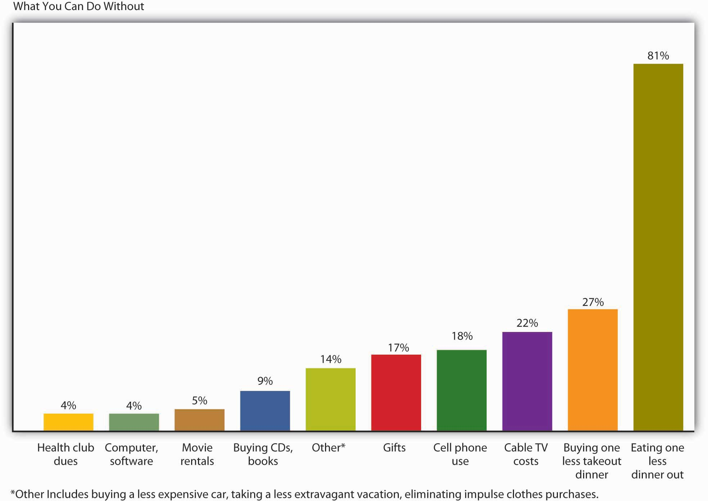

Do you wonder where your money goes? Do you have trouble controlling your spending? Have you run up the balances on your credit cards or gotten behind in your payments and hurt your credit rating? Do you worry about how you’ll pay off your student loans? Would you like to buy a new car or even a home someday and you’re not sure where the money will come from? If you do have extra money, do you know how to invest it? Do you know how to find the right job for you, land an offer, and evaluate the company’s benefits? If these questions seem familiar to you, you could benefit from help in managing your personal finances. This chapter will provide that help.
Let’s say that you’re single and twenty-eight. You have a good education and a good job—you’re pulling down $60K working with a local accounting firm. You have $6,000 in a retirement savings account, and you carry three credit cards. You plan to buy a house (maybe a condo) in two or three years, and you want to take your dream trip to the world’s hottest surfing spots within five years (or, at the most, ten). Your only big worry is the fact that you’re $70,000 in debt, mostly from student loans, your car loan, and credit card debt. In fact, even though you’ve been gainfully employed for a total of six years now, you haven’t been able to make a dent in that $70,000. You can afford the necessities of life and then some, but you’ve occasionally wondered if you’re ever going to have enough income to put something toward that debt.This vignette is adapted from a series entitled USA TODAY’s Financial Diet, which ran in USA Today in 2005 (accessed September 13, 2008). Go to http://www.usatoday.com/money/perfi/basics/2005-04-14-financial-diet-excercise1_x.htm and use the embedded links to follow the entire series.
Now let’s suppose that while browsing through a magazine in the doctor’s office, you run across a short personal-finances self-help quiz. There are two sets of three statements each, and you’re asked to check off each statement with which you agree:
At the bottom of the page, you’re asked whether you agreed with any of the statements in Part 1 and any of the statements in Part 2. It turns out that you answered yes in both cases and are thereby informed that you’re probably jeopardizing your entire financial future.
Unfortunately, personal-finances experts tend to support the author of the quiz: if you agreed with any statement in Part 1, you have a problem with splurging; if you agreed with any statement in Part 2, your monthly bills are too high for your income.
So, you have a financial problem: according to the quick test you took, you’re a splurger and your bills are too high for your income. How does this put you at risk? If you get in over your head and can’t make your loan or rent payments on time, you risk hurting your credit—your ability to borrow in the future.
Let’s talk about your credit. How do potential lenders decide whether you’re a good or bad credit risk? If you’re a poor credit risk, how does this affect your ability to borrow, or the rate of interest you have to pay, or both? Here’s the story. Whenever you use credit, those you borrow from (retailers, credit card companies, banks) provide information on your debt and payment habits to three national credit bureaus: Equifax, Experian, and TransUnion. The credit bureaus use the information to compile a numerical credit score, generally called a FICO score; it ranges from 300 to 900, with the majority of people falling in the 600–700 range. (Here’s a bit of trivia to bring up at a dull party: FICO stands for Fair Isaac Company—the company that developed the score.) In compiling the score, the credit bureaus consider five criteria: payment history—do you pay your bills on time? (the most important), total amount owed, length of your credit history, amount of new credit you have, and types of credit you use. The credit bureaus share their score and other information about your credit history with their subscribers.
So what does this do for you? It depends. If you paid your bills on time, carried only a reasonable amount of debt, didn’t max out your credit cards, had a history of borrowing, hadn’t applied for a bunch of new loans, and borrowed from a mix of lenders, you’d be in good shape. Your FICO score would be high and lenders would like you. Because of your high credit score, they’d give you the loans you asked for at reasonable interest rates. But if your FICO score is low (perhaps you weren’t so good at paying your bills on time), lenders won’t like you and won’t lend you money (or would lend it to you at high interest rates). So it’s very, very, very (the last “very” is for emphasis) important that you do everything possible to earn a high credit score. If you don’t know your score, here is what you should do: go to http://www.annualcreditreport.com and request a free copy of your credit report. Your report won’t include your FICO score, but you can purchase your score for about $15.
As a young person, though, how do you get a high score? Start using credit now, but borrow sensibly. Get a credit card and use it to make small purchases and then pay your bill off on time. What if you’ve already damaged your credit score—what can you do to raise it? Do what you should have done in the first place: pay your bills on time, pay more than the minimum balance due on your credit cards and charge cards, keep your card balances low, and pay your debts off as quickly as possible. Also, scan your credit report for any errors. If you find any, work with the credit bureau to get them corrected.
Because your financial problem was brought on, in part, because you have too much debt, you should stop borrowing. But, what if your car keeps breaking down and you’re afraid of getting stuck on the road some night? So, you’re thinking of replacing it with a used car that costs $10,000. Before you make a final decision to incur the debt, you should understand its costs. The rate of interest matters a lot. Let’s compare three loans at varying interest rates: 6, 10, and 14 percent. We’ll look at the monthly payment, as well as the total interest paid over the life of the loan.
| $10,000 Loan for 4 Years at Various Interest Rates | |||
|---|---|---|---|
| Interest Rate | 6% | 10% | 14% |
| Monthly Payment | $235 | $254 | $273 |
| Total Interest Paid | $1,272 | $2,172 | $3,114 |
If your borrowing interest rate is 14 percent, rather than 6 percent, you’ll end up paying an additional $1,842 in interest over the life of the loan. Your borrowing cost at 14 percent is more than twice as much as it is at 6 percent. The conclusion: search for the best interest rates and add the cost of interest to the cost of whatever you’re buying before deciding whether you want it and can afford it. If you have to borrow the money for the car at the 14 percent interest rate, then the true cost of the car isn’t $10,000, but rather $13,114.
Now, let’s explore the complex world of credit cards. First extremely important piece of information: not all credit cards are equal. Second extremely important piece of information: watch out for credit card fees! Credit cards are a way of life for most of us. But they can be very costly. Before picking a credit card, do your homework. A little research can save you a good deal of money. There are a number of costs you need to consider:
An alternative to a credit card is a debit cardPulls money out of your checking account whenever you use the card to buy something or get cash from an ATM., which pulls money out of your checking account whenever you use the card to buy something or get cash from an ATM. These cards don’t create a loan when used. So, are they better than credit cards? It depends—each has its advantages and disadvantages. A big advantage of a credit card is that it helps you build credit. A disadvantage is that you can get in over your head in debt and possibly miss payments (thereby incurring a late payment fee). Debit cards help control spending. Theoretically, you can’t spend more than you have in your checking account. But be careful—if you don’t keep track of your checking account balance, it’s easy to overdraft your account when using your debit card. In the past, banks would just reject purchases or ATM withdrawals if a customer didn’t have enough money in his or her account to cover the transaction. Recently, though, some banks are accepting the transaction and then charging a checking account overdraft fee of about $25.Kathy Chu,” Debit card overdraft fees hit record highs,” USA Today, January 24, 2007, http://www.usatoday.com/money/perfi/credit/2007-01-24-debit-card-fees_x.htm (accessed August 30, 2008). This can be quite expensive, particularly if you used the card to purchase a hamburger and soda at a fast-food restaurant.
What should you do now to turn things around—to start getting out of debt? According to many experts, you need to take two steps:
Step 1 in this abbreviated two-step personal-finances “plan” is probably the easier of the two, but taking even this step can be hard enough. In fact, a lot of people would find it painful to give up their credit cards, and there’s a perfectly logical reason for their reluctance: the degree of pain that one would suffer from destroying one’s credit cards probably stands in direct proportion to one’s reliance on them.
As of this writing, total credit card debt in the United States is about $790 billion, out of $2.6 trillion in total consumer debt. Closer to home, one recent report puts average credit card debt per U.S. household at $9,840 (up 25 percent since 2000).Barry Wood, “US Credit Card Debt Rising as Other Sources Dry Up,” VOA News, February 26, 2008, http://www.voanews.com/english/archive/2008-02/2008-02-26-voa1.cfm?CFID=39187384&CFTOKEN=10951195 (accessed September 13, 2008); Joshua Lipton, “Choking On Credit Card Debt,” Forbes.com, September 12, 2008, http://www.forbes.com/finance/2008/09/12/credit-card-debt-pf-ii-in_jl_0911creditcards_inl.html (accessed September 13, 2008). Why are these numbers important? Primarily because, on average, too many consumers have debt that they simply can’t handle. “Credit card debt,” says one expert on the problem, “is clobbering millions of Americans like a wrecking ball,”U.S. Senator Ron Wyden, quoted in “Avoiding the Pitfalls of Credit Card Debt” (Center for American Progress Action Fund, 2008), http://www.americanprogressaction.org/issues/2008/avoiding_pitfalls.html (accessed September 13, 2008). and if you’re like most of us, you’d probably like to know whether your personal-finances habits are setting you up to become one of the clobbered.
If, for example, you’re worried that your credit card debt may be overextended, the American Bankers Association suggests that you ask yourself a few questions:Joshua Lipton, “Choking On Credit Card Debt,” Forbes.com, September 12, 2008, http://www.forbes.com/finance/2008/09/12/credit-card-debt-pf-ii-in_jl_0911creditcards_inl.html (accessed September 13, 2008).
If such habits as these have helped you dig yourself into a hole that’s steadily getting deeper and steeper, experts recommend that you take three steps as quickly as possible:Joshua Lipton, “Choking On Credit Card Debt,” Forbes.com, September 12, 2008, http://www.forbes.com/finance/2008/09/12/credit-card-debt-pf-ii-in_jl_0911creditcards_inl.html (accessed September 13, 2008).
And, if you find you’re unable to pay your debts, don’t hide from the problem, as it will not go away. Call your lenders and explain the situation. They should be willing to work with you in setting up a payment plan. If you need additional help, contact a nonprofit credit assistance group such as the National Foundation for Credit Counseling (http://www.nfcc.org).
Now, it’s time to tackle step 2 of our recommended personal-finances miniplan: do whatever you can to bring down your monthly bills. As we said, many people may find this step easier than step 1—cutting up your credit cards and starting to live on a cash-only basis.
If you want to take a gradual approach to step 2, one financial planner suggests that you perform the following “exercises” for one week:Financial planner Elissa Buie helped to develop USA TODAY’s Financial Diet.
Among other things, you’ll probably be surprised at how much of your money can become somebody else’s money on a week-by-week basis. If, for example, you spend $3 every day for one cup of coffee at a coffee shop, you’re laying out nearly $1,100 a year. If you use your ATM card at a bank other than your own, you’ll probably be charged a fee that can be as high as $3. The average person pays more than $60 a year in ATM fees, and if you withdraw cash from an ATM twice a week, you could be racking up $300 in annual fees. As for your ATM receipts, they’ll tell you whether, on top of the fee that you’re charged by that other bank’s ATM, your own bank is also tacking on a surcharge.Sun Trust Banks, “Money Management” (2008), http://www.suntrusteducation.com/toolbox/moneymgt_spendless.asp (accessed September 16, 2008); “Reduce ATM Fees—Daily Financial Tip,” SavingAdvice.com, April 5, 2006, http://www.savingadvice.com/blog/2006/04/05/10533_reduce-atm-fees-daily-financial-tip.html (accessed September 16, 2008); Marshall Loeb, “Four Ways to Keep ATM Fees from Draining Your Bank Account,” MarketWatch (June 14, 2007), http://www.marketwatch.com/news/story/four-ways-keep-atm-fees/story.aspx?guid=%7BEFB2C425-B7F8-40C4-8720-D684A838DBDA%7D (accessed September 16, 2008); Kate Rosenberger, “How to Avoid ATM Fees,” Helium (2008), http://www.helium.com/items/1100945-how-to-avoid-atm-fees (accessed September 16, 2008).
If this little exercise proves enlightening—or if, on the other hand, it apparently fails to highlight any potential pitfalls in your spending habits—you might devote the next week to another exercise:
The obvious question that you need to ask yourself at the end of week 2 is: “How much did I save?” An equally interesting question, however, is: “What can I do without?” One survey asked five thousand financial planners to name the two expenses that most consumers should find easiest to cut back on. Figure 14.3 "Reducible Expenses" shows the results.
Figure 14.3 Reducible Expenses
You may or may not be among the American consumers who buy thirty-five million cans of Bud Light each and every day, or 150,000 pounds of Starbucks coffee, or 2.4 million Burger King hamburgers, or 628 Toyota Camrys. Yours may not be one of the 70 percent of U.S. households with an unopened consumer-electronics product lying around.Michael Arrington, “eBay Survey Says Americans Buy Crap They Don’t Want,” TechCrunch, August 21, 2008, http://abcnews.go.com/GMA/Consumer/Story?id=3290458&page=1 (accessed September 14, 2008). And you may or may not be ready to make some major adjustments in your personal-spending habits, but if, at age twenty-eight, you have a good education and a good job, a $60,000 income, and a $70,000 debt—by no means an implausible scenario—there’s a very good reason why you should think hard about controlling your modest share of that $2.6 trillion in U.S. consumer debt: your level of indebtedness will be a key factor in your ability—or inability—to reach your longer-term financial goals, such as home ownership, a dream trip, and, perhaps most important, a reasonably comfortable retirement.
The great English writer Samuel Johnson once warned: “Do not accustom yourself to consider debt only as an inconvenience; you will find it a calamity.” In Johnson’s day, you could be locked up for failing to pay your debts; there were even so-called “debtor’s prisons” for the purpose, and we may suppose that the prospect of doing time for owing money was one of the things that Johnson had in mind when he spoke of debt as a potential “calamity.” We don’t expect that you’ll ever go to prison on account of indebtedness, and we won’t suggest that, say, having to retire to a condo in the city instead of a tropical island is a “calamity.” We’ll simply say that you’re more likely to meet your lifetime financial goals—whatever they are—if you plan for them. What you need to know about planning for and reaching those goals is the subject of this chapter.
(AACSB) Analysis
There are a number of costs associated with the use of a credit card, including finance charges, annual fee, over-limit fee, late payment fee, and cash advance fee. Identify these costs for a credit card you now hold. If you don’t presently have a credit card, go online and find an offer for one. Check out these costs for the card being offered.